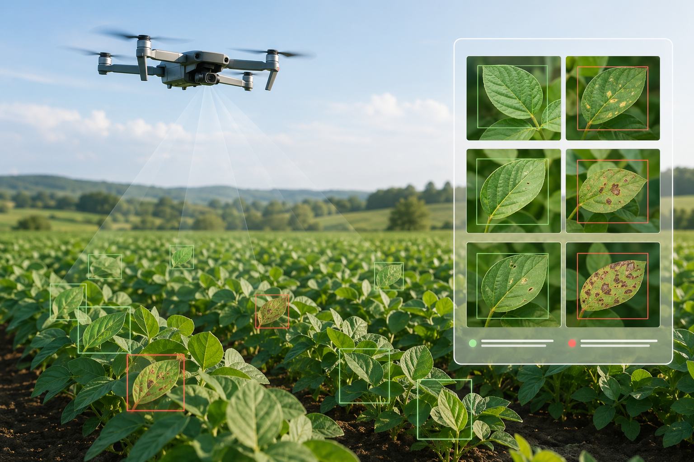

Agentic-PestGuard
I designed an autonomous drone monitoring workflow for agricultural pest detection. The project integrates YOLOv8 for real-time visual recognition, OpenCV for frame processing, RTSP for low-latency video streaming, and an LLM-based reasoning loop to evaluate weather, crop stage, and treatment context.
The agentic layer was built to move beyond detection alone: it can synthesize field observations with retrieved agricultural knowledge and produce structured audit reports for decision support.